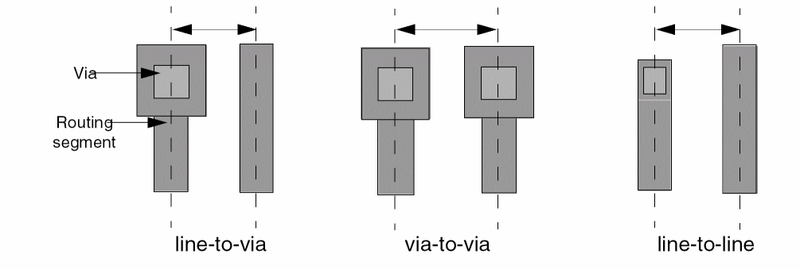
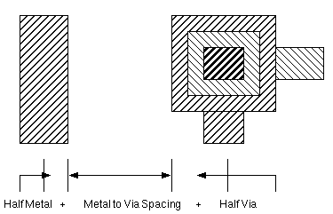
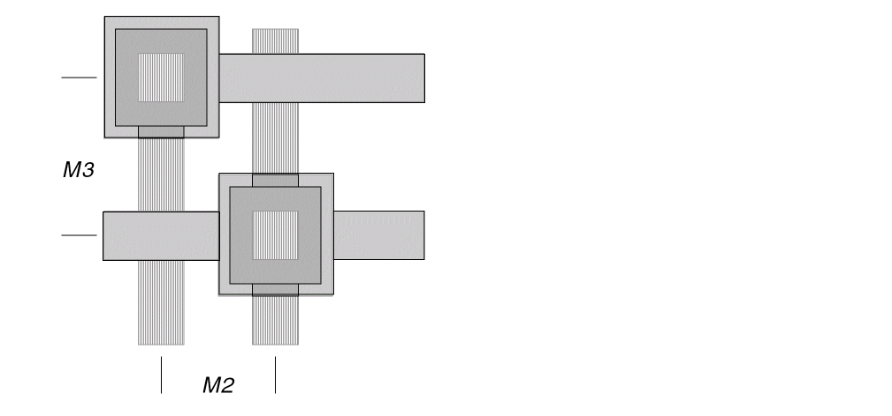

Guidelines for Setting Pitch in a Cell Library
This topic discusses the various guidelines associated with determining routing grid pitches and recommended pitch setting strategies.
You must define horizontal and vertical grids for routing on every routing layer. To do this, you must do the following:
-
Select the preferred and non preferred routing direction for each layer.
One common convention is HVH, where the preferred direction for routing M1 and M3 is horizontal and the preferred direction for M2 is vertical. -
Define a minimum pitch for each layer in the preferred direction track for that layer.
This pitch must be at least line-to-via distance. Anything less will result in low utilization rates and longer run times, because the router will not be able to place vias next to wires on adjacent tracks.
The following figure shows line and via definitions for track pitch:

The most common track pitch is line-to-via, because it is the minimum pitch in which you can place a via next to a route. It is calculated as follows:
half the metal width for the layer + the metal spacing + half the via.

-
Assign tracks in the non-preferred direction for every routing layer.
Align these tracks with preferred direction tracks on adjacent layers, even if this is different from the track pitch of that layer in the preferred direction. Lining up the tracks lets the software create jogs at locations where vias can be placed or where pins can be connected to consistent xy locations. -
Allow for diagonally adjacent vias.
Increase spacing to allow vias to be placed diagonally adjacent to each other. This might make the orthogonal spacing slightly more than line-to-via, but will reduce overall die size, because lack of via resources causes more congestion and longer routes to route around congested areas.
 -
Maximize total routing track resources
If you have an HVH layer scheme, keep M1 and M3 spacing to the minimum, and make any needed spacing increases in M2. Minimizing spacing on two layers (M1 and M3) gives you more total routing resources than minimizing spacing on one layer by the same amount.
To a certain extent, the placer also adjusts for different horizontal and vertical demands on the routing resources. You can also use a rectangular die instead of a square one to maximize routing resources. -
Use rectangular vias if that allows you to have smaller track pitch and more total routing resources overall.
Ensure that the rectangular via and pitch still allows diagonal vias.
Normally, you maximize your total routing track resources. However, if one direction is constrained, you might want to maximize your resources in that direction.
For example, take an HVH library with the same line-to-via spacing for all three layers and no diagonal vias. To allow for diagonal vias, increase the spacing for the horizontal layers (M1 and M3) to maximize the vertical routing resources on M2. This might not optimize the overall routing resources, but it reduces the congestion on the critically constrained M2 layer.
Alternatively, if the cells have no free M1 tracks and the M3 pitch is much larger than M2, you can increase the spacing on M2.
Another technique for handling an over constrained layer is to use a die aspect ratio that minimizes the routing demand for that layer.
Related Topics
Guidelines for Setting Pitch for Layers with the Same Preferred Direction
Guidelines for Setting Pitch for Via Stacking
Guidelines for Designing a Gridded Library for Innovus
Guidelines for Converting an Existing Library into Gridded Library
Return to top